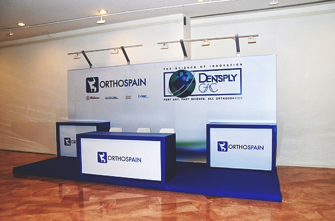
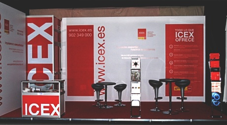
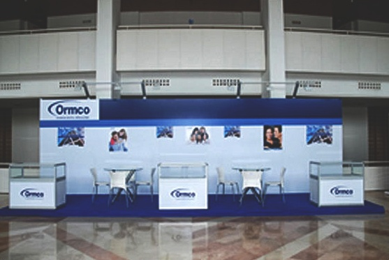

Stands de Diseño
Diseñamos y montamos un stand acorde a sus necesidades el cual resulte lo más atractivo, interesante y llamativo.

Diseñamos y montamos un stand acorde a sus necesidades el cual resulte lo más atractivo, interesante y llamativo.

Stands de diseño con tarima y mostradores de madera, con posibilidad de retroiluminación de los mismos. Trasera realizada con un sistema propio de pretensado de lonas. Adaptación a las medidas de cada cliente.


Stands modulares con la posibilidad de cartelas de madera o cartelas curvadas de metacrilato.